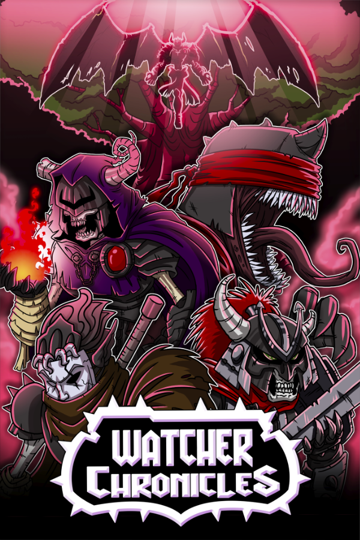

Watcher Chronicles
Watcher Chronicles
Details
|  | |
| Playtime | Not Played |
| Last Activity | Never |
| Added | 5/06/2025 3:05:38 |
| Modified | 7/06/2025 19:14:31 |
| Completion Status | Not Played |
| Library | Steam |
| Source | Steam |
| Platform | PC (Windows) |
| Release Date | |
| Community Score | |
| Critic Score | |
| User Score | |
| Genre | Action Indie RPG |
| Developer | |
| Publisher | |
| Feature | Achievements Cloud Saves Co-Op Family Sharing Full Controller Support Multi-Player Remote Play Together Shared/Split Screen Shared/Split Screen Co-Op Single-Player Supports Couch Co-Op |
| Links | Community Hub Discussions Guides News Store Page PCGamingWiki Achievements |
| Tag | 2D Action Action RPG Action-Adventure Controller Dark Fantasy Difficult Hack and Slash Indie Local Co-Op Local Multiplayer Metroidvania Nonlinear Open World Platformer RPG Side Scroller Singleplayer Souls-like Unforgiving |
Description
Oh, ye poor gamer, I pity thee… for in your journey through Steam, you have found yourself on a dark page where the straight way is lost… You can not turn back, for you’ve found the suffering you yearn for… Prepare thy thumbs and trigger fingers for your penance has begun…
Purgatory has been invaded by an unholy threat. A group of fallen ones called “The Watchers” now seek to transform it into a new hell. Lost souls must unite or face utter annihilation…

Fast Skill Based Combat - Challenging but fair souls-like combat with tight and finely tuned controls. Dodge, block, and slice your way through enemies.
Large Interconnected World - Explore every crack of a purgatorial realm filled with secrets and game changing loot in a non-linear fashion.
Local Co-op Multiplayer - Take on the entire game in local co-op with a friend! Play online with full native Steam remote play together support.

Powerful Magic - Incinerate enemies with waves of fire, lightning, and void or summon the horde with powerful necromancy.
Unique Weapons - Giant swords, blade staffs, scythes, polearms, and more to discover and master. Weapon types all have different move sets that completely changes up the gameplay.
Robust Streamlined RPG System - Carefully upgrade your hero to match your play style and build out your own unique character class. Discover 100+ upgradable armor, weapons, and rings to specialize your build.

Relentless Bosses - Battle over 20+ finely tuned and challenging bosses that require careful planning and significant skill to take down.
New Game Plus - Keep your gear when finishing the game and continue the journey with increasingly harder difficulties.
Oh and you will die... a lot...

Now go forth gamer... Existence itself hangs in the balance... Hit the Wishlist button and the first step of your long journey has begun!

Purgatory has been invaded by an unholy threat. A group of fallen ones called “The Watchers” now seek to transform it into a new hell. Lost souls must unite or face utter annihilation…
Features
Fast Skill Based Combat - Challenging but fair souls-like combat with tight and finely tuned controls. Dodge, block, and slice your way through enemies.
Large Interconnected World - Explore every crack of a purgatorial realm filled with secrets and game changing loot in a non-linear fashion.
Local Co-op Multiplayer - Take on the entire game in local co-op with a friend! Play online with full native Steam remote play together support.
- Option 1: Player 2 can use a locally saved character for co-op. In this mode player 2 can progress, find loot, and get the full RPG experience.
- Option 2: Player 2 can use a preconfigured mercenary that matches Player 1s level and equipment. Great for quick sessions with friends who don't have a lot of time.
Powerful Magic - Incinerate enemies with waves of fire, lightning, and void or summon the horde with powerful necromancy.
Unique Weapons - Giant swords, blade staffs, scythes, polearms, and more to discover and master. Weapon types all have different move sets that completely changes up the gameplay.
Robust Streamlined RPG System - Carefully upgrade your hero to match your play style and build out your own unique character class. Discover 100+ upgradable armor, weapons, and rings to specialize your build.
Relentless Bosses - Battle over 20+ finely tuned and challenging bosses that require careful planning and significant skill to take down.
New Game Plus - Keep your gear when finishing the game and continue the journey with increasingly harder difficulties.
Oh and you will die... a lot...
Now go forth gamer... Existence itself hangs in the balance... Hit the Wishlist button and the first step of your long journey has begun!